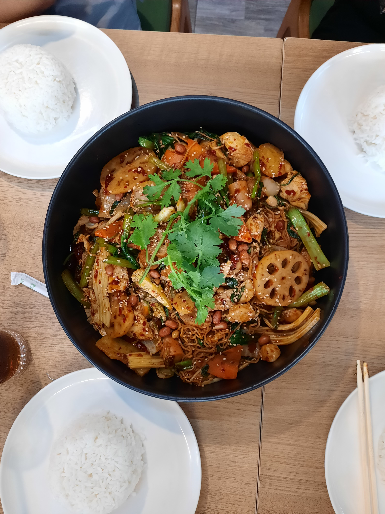
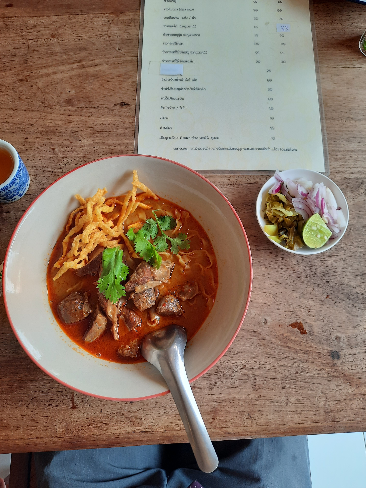
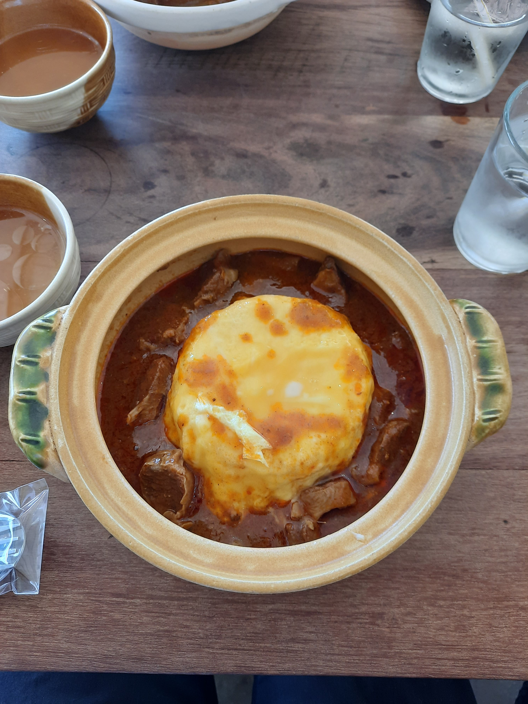
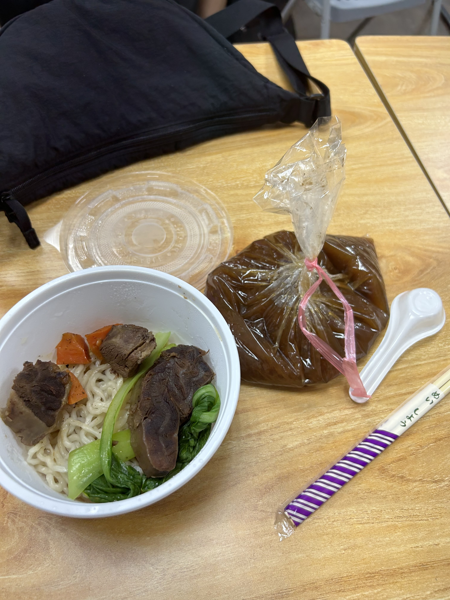

Welcome to my personal blog, where I share my culinary adventures from all around the world. From sweet mangoes in Thailand to streetfood in Mexico, I've had the chance to taste some incredible dishes. Below, you’ll find a chart showcasing all the places I've visited. Come take a look at my journey and the delicious foods I've had along the way!
In this blog, I will be showing the different food I’ve had in these countries:
- Thailand
- Burmese-Inspired Noodle Dish (รากบัวและบะหมี่)
- Khao Soi (ข้าวซอย)
- ข้าวไข่แกง (Curry Rice with Egg)
- Taiwan
- Beef Noodles (牛肉麵)
- Mango Shaved Ice (芒果冰)
- Mexico
- Street Tacos
- Stuffed Pepper Taco
Thailand
I had the incredible opportunity to serve a two-year church mission in Thailand. During my time there, I was immersed in a completely new culture, learned the Thai language, and of course discovered some of the most flavorful food in the world!

Burmese-inspired noodle dish called รากบัวและบะหมี่. Full of veggies, springy noodles, and lotus root.
Khao Soi (ข้าวซอย) – Northern curry noodles with coconut broth and crispy toppings.
ข้าวไข่แกง – Thai curry over rice, topped with a savory egg.
Taiwan
With both my parents being from Taiwan, I’ve had the chance to visit quite a few times. While it’s hard to forget the humidity, it’s the food I’ll definitely miss the most.

Beef Noodles (牛肉麵) – Rich broth with tender beef and chewy noodles.

Mango Shaved Ice (芒果冰) – Fluffy shaved ice topped with fresh mango and condensed milk.
Mexico
Another regular spot we go to is Mexico! We try to go almost every year during spring break. It’s always a trip full of good food, beautiful sights, and great memories.

Street tacos – al pastor, carne asada, or shrimp. Made fresh and full of flavor.

Giant pepper stuffed with shrimp and wrapped in bacon – smoky, spicy, and savory.